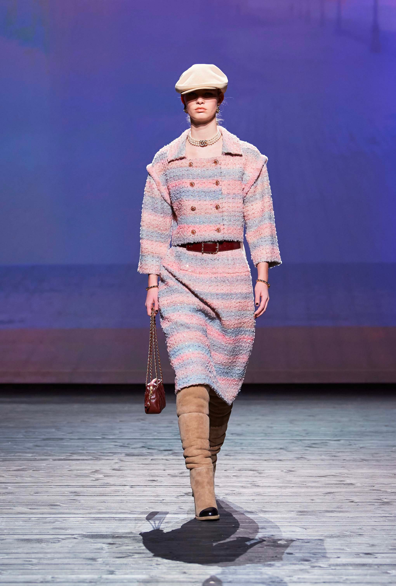

Textile Development - Chanel 2024/25 FW Ready-to-Wear
Textile design, Fashion
Colour and material research for CHANEL’s Fall-Winter 2024/25 Ready-to-Wear collection, based on the theme Sunset of Deauville.
Final colour proposal selected for production and runway use.
